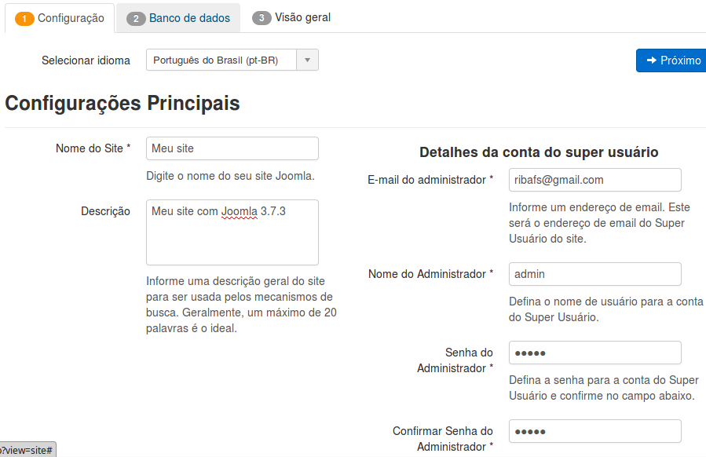
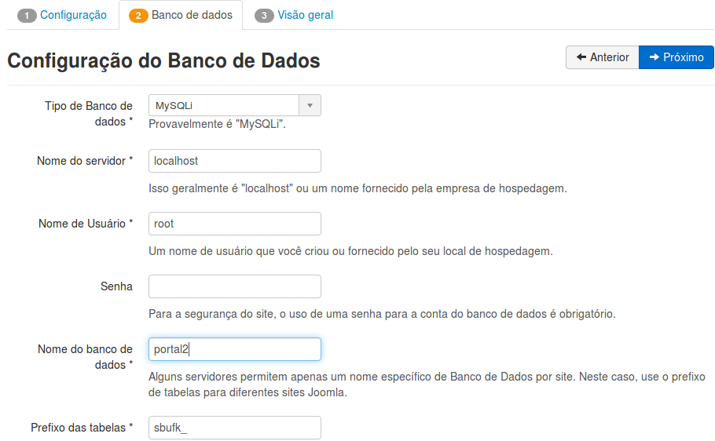
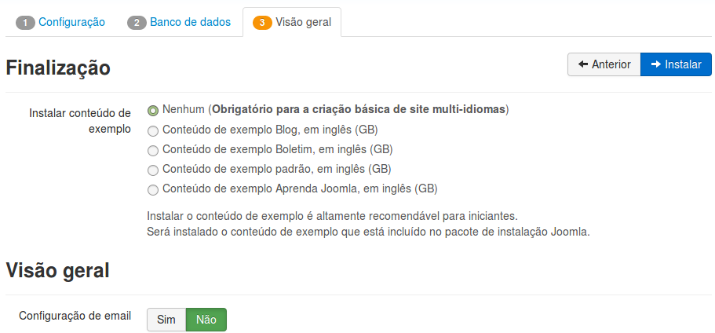
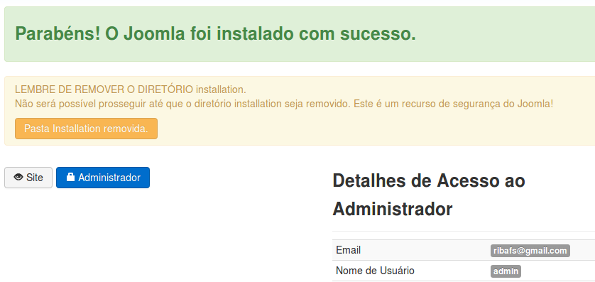
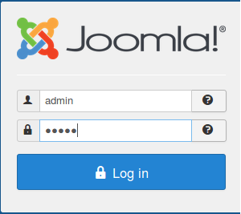
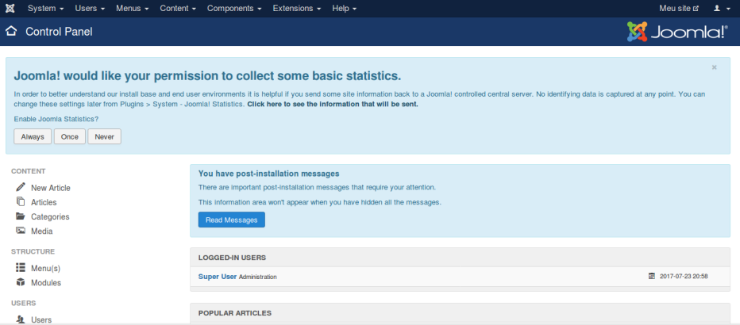
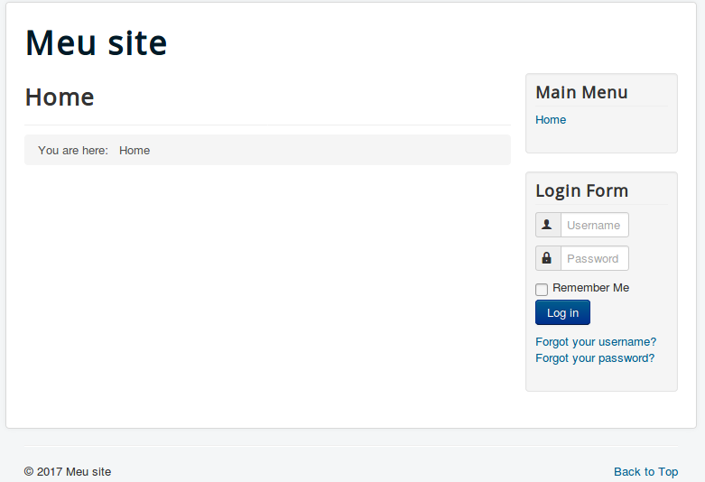

Instalação do Joomla 3.7.3
Download
Criar uma pasta no diretório web (criarei a pasta portal)
portal
Descompactar o Joomla dentro da pasta portal. Se certifique que ele não criou outra pasta dentro de portal, mas sim que descompactou todo o seu conteúdo dentro de portal.
Se for uma instalação local nem precisa criar o banco, pois o joomla o criará, desde que você use o super usuário root. Mas se estiver instalando em um servidor de hospedagem ou outro não usará o root. Então precisará criar o banco, criar um usuário e dar permissões ao usuário para usar o banco. Vou considerar a instalação local.
Chamando pelo Navegador
Configuração

Mude o idioma para Português do Brasil
Nome do Site – Meu site
Descrição – Meu site com Joomla 3.7.3
E-mail do administrador – Este endereço de email está sendo protegido de spambots. Você precisa do JavaScript ativado para vê-lo.
Nome do Administrador – admin
Senha do Administrador – admin
Confirmar Senha do Administrador – admin
Obs.: facilita o uso um usuário e senha simples e pequeno "admin".
Clique em Próximo
Banco de Dados

Precisa dos dados do MySQL. Entre com usuário, senha e nome do banco.
Clique em Próximo
Visão Geral
Se considerar que é o primeiro site criado com Joomla, então escolha com conteúdo de exemplo.
Clique em Conteúdo de exemplo Aprenda Joomla, em inglês e então clique em Instalar.
Para criar um site que você irá usar eu recomendo instalar sem conteúdo de exemplo, que fica menos trabalhoso, pois não precisará remover nada.

Aguarde que o banco seja criado e receba conteúdo.
Clique em Finalizar
Joomla Instalado

Clique em Remover o diretório installation.
Então clique em Administrador para acessar o admin. Uma instalação do Joomla é constituída de dois sites: o administrator e o site visto pelos visitantes.
Aparecerá a tela de login. Entre com admin e admin.

Administrator

Agora veja a cara do site padrão criado pelo Joomla

É um template bem simples, que geralmente não satisfaz quem instala o Joomla e cria outro ou procura por um gratuito ou pago na internet.
Precisaremos instalar algumas extensões nativas e outras de terceiros.
Veja detalhes na seção de Administração.
Conceitos do Joomla
O Joomla tem algumas extensões com que trabalha, módulos, componentes, plugins e templates.
Um pouco sobre os elementos do Joomla e seus conceitos:
- Módulos – Os módulos são as extensões do Joomla mais simples.
Cada página do Joomla dividi-se em regiões, pedaços. E estas regiões chamam-se módulos. Temos a região do topo, onde podem ser mostrados alguns módulos. Um deles é a logomarca, outro é o menu. Também aí podemos exibir o breadcrumbs.
A região central é reservada para exibir o conteúdo, os artigos.
A quantidade de regiões de uma página Joomla depende do template. Temos módulos na lateral esquerda, na lateral direita, entre o topo e o conteúdo, no rodapé, etc.
Detalhes - https://docs.joomla.org/Module
Componentes – Geralmente os componentes são as extensões maiores e mais complexas. São uma pequena aplicação dentro do Joomla. Um exemplo de componente de terceiros é o extPlorer, que conta com diversas funcionalidades. Um exemplo de componente nativo é o Contato. Quando abrimos um componente sempre ele é executado na parte central da página. Este é o comportamento dos componentes.
Detalhes - https://docs.joomla.org/Component/pt-br
Plugins – Plugins são extensões que disparam código quando acontece um dos eventos do Joomla. Os eventos são divididos em categorias. Temos eventos de editor, de conteúdo, de sistema de usuário, etc.
Detalhes - https://docs.joomla.org/Plugin/pt-br
Templates – São as extensões que cuidam da aparência das páginas, cores, posições, etc. Atualmente existem extensões mais complexas, que reúnem duas ou mais extensões e são chamadas de frameworks para templates. A finalidade é oferecer mais recursos para a criação de templates. Um exemplo é o http://gantry.org/.
Detalhes - https://docs.joomla.org/Template/pt-br